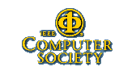

SCAM 2007
Seventh IEEE International Working Conference
on Source Code Analysis and Manipulation
30th September-1st October 2007,
Maison Internationale
, Paris, France,
Registration is now open
.
Co-located with
Twenty third
IEEE
International Conference on Software Maintenance, (
ICSM 2007
)
SPONSORS
